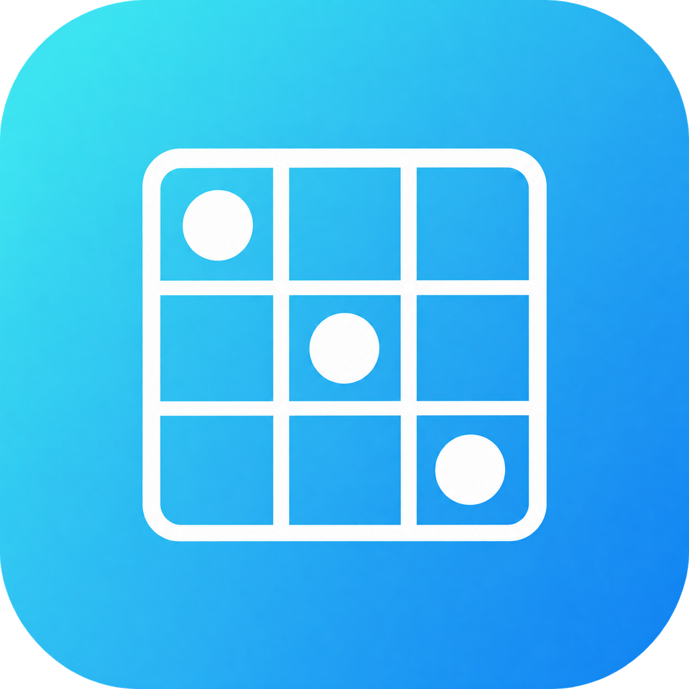

8:39
100%
教師工作桌面
8:39
星期二，10月28日
全螢幕
專注模式
▦
上課時間表
查看全部
›
10:00
數學 · 3A
進行中
11:00
英文 · 3A
下一節
12:00
常識 · 3B
▦
行事曆
‹
2026年9月
›
日
一
二
三
四
五
六
16日：數學小測 · 3A
報時時鐘
12
3
6
9
08:39
整點報時：開
班別
加分
計時
白板
功課紙

賓果
尋寶
設定
課堂工具
班別管理
偵測到裝置時間曾被更改，請核對目前時間。
已核對
修改設定
退出顯示
白板 1
←
返回桌面
✎
畫筆
╱
直線
▰
螢光筆
⌫
擦膠
✥
移動
粗幼
↶
復原
↷
重做
◐
背景
▤
白板
−
縮小
100%
重設
＋
放大
⇩
PNG
⌫
清除
⛶
全螢幕
選擇背景
純白
仿課室黑板
我的白板
＋ 建立新白板
← 返回工具
← 返回工具